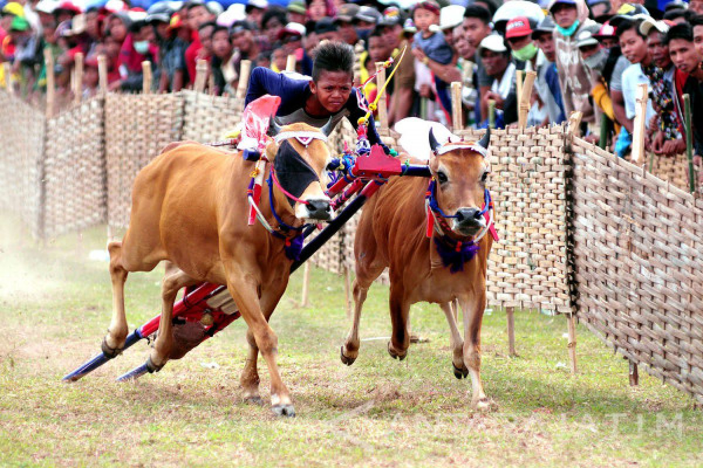
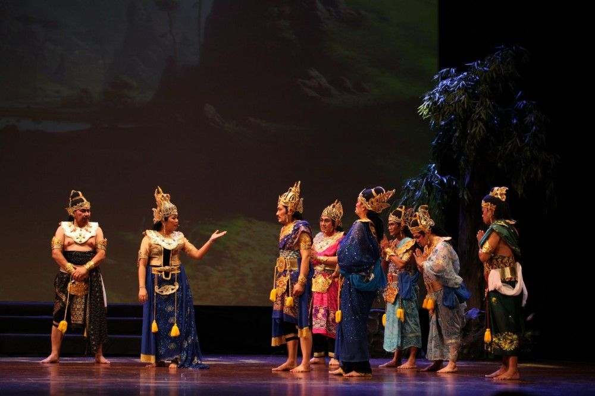
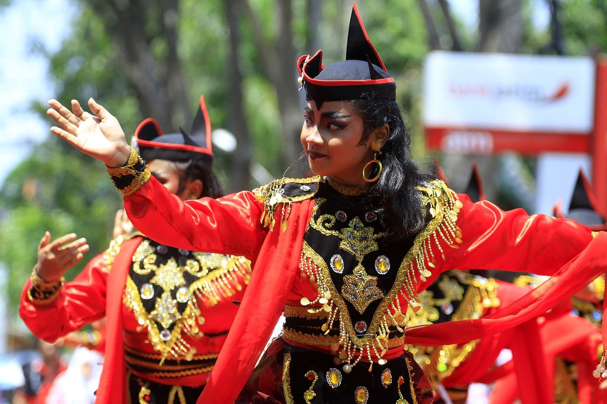

Kebudayaan di Jawa Timur sangat kaya dan beragam, mencakup berbagai tradisi, seni, dan upacara adat yang memiliki nilai historis dan sosial tinggi.
Beberapa contoh kebudayaan yang terkenal adalah Reog Ponorogo, sebuah tarian tradisional yang menampilkan penari dengan topeng besar berbentuk kepala singa yang dihiasi bulu merak, serta Karapan Sapi,
sebuah lomba balap sapi khas Madura yang menarik perhatian banyak orang. Selain itu, Jawa Timur juga memiliki seni pertunjukan seperti Ketoprak, yang merupakan teater rakyat yang menggabungkan unsur drama, tari,
dan musik untuk menceritakan kisah-kisah sejarah dan mitos. Upacara adat seperti Yadnya Kasada yang dilakukan oleh masyarakat Tengger di Gunung Bromo juga merupakan bagian penting dari kebudayaan Jawa Timur,
di mana sesaji diberikan ke kawah gunung sebagai bentuk rasa syukur dan permohonan keselamatan. Festival Bandeng di Gresik, yang menghormati ikan bandeng dengan berbagai kegiatan, menunjukkan kekayaan tradisi kuliner di daerah ini.
Keberagaman budaya ini mencerminkan kekayaan dan keanekaragaman warisan budaya Jawa Timur yang terus dipelihara dan dikembangkan oleh masyarakatnya hingga kini
Adat Istiadat

1. Karapan Sapi
Tradisi balap sapi yang populer di Madura, di mana sapi-sapi berlomba menarik kereta kecil dengan kecepatan tinggi.
Tradisi ini biasanya diadakan sebagai bagian dari perayaan atau festival tertentu.
Tradisi

1. Ketoprak
Pertunjukan teater rakyat yang menggabungkan drama, tari,
dan musik untuk menceritakan kisah sejarah dan mitos dari Jawa.
Seni

1. Tari Remo
Tarian selamat datang yang biasanya ditampilkan pada acara-acara resmi dan menyambut tamu penting.
Tari Remo ditandai dengan gerakan yang dinamis dan kostum yang mencolok.
Bahasa
1. Bahasa Jawa
Dialek Arekan: Digunakan di Surabaya dan sekitarnya, termasuk Malang dan Gresik.
Dialek Mataraman: Digunakan di wilayah Mataraman seperti Madiun, Kediri, dan sebagian Ponorogo.Dialek Osing: Digunakan oleh masyarakat di Banyuwangi.
Nilai-Nilai Budaya
1. Gotong Royong
Nilai ini mengajarkan pentingnya kerja sama dan kebersamaan dalam melakukan berbagai kegiatan komunitas. Contohnya adalah kegiatan membangun infrastruktur desa secara bersama-sama.